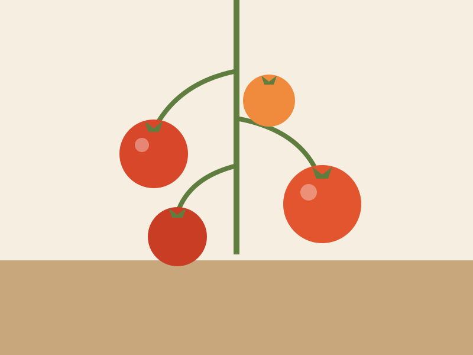

Welcome to my garden diary
Hello, and thank you for stopping by! This is where I write about my little vegetable patch, my roses, and everything I learn along the way.
What I grow
I'm not an expert — just curious and happy to share what works (and what doesn't).
- Tomatoes (far too many)
- Courgettes and beans
- Old English roses
Latest from the garden
Roses in November
Who would have thought: the roses are still flowering in November. The mild autumn kept them going, and the last buds are opening along the fence. Time to…

Starting from seed
This spring I tried growing everything from seed on the kitchen windowsill. Some things worked beautifully, others… not so much. Tomatoes: every single seed…